Python数据分析（四）
 CoMath
CoMath
对于这一组电影数据，如果我们想runtime的分布情况.
# coding=utf-8
import pandas as pd
from matplotlib import pyplot as plt
file_path = "./IMDB-Movie-Data.csv"
df = pd.read_csv(file_path)
# print(temp_list.tolist())
# nums = set([i for j in temp_list for i in j])
# print(len(nums))
time_list = df["Runtime (Minutes)"].values
max_time = time_list.max()
min_time = time_list.min()
dis = (max_time - min_time)//5
plt.figure(figsize=(20,8),dpi=80)
plt.hist(time_list,dis)
plt.xticks(range(min_time,max_time,5))
plt.show()
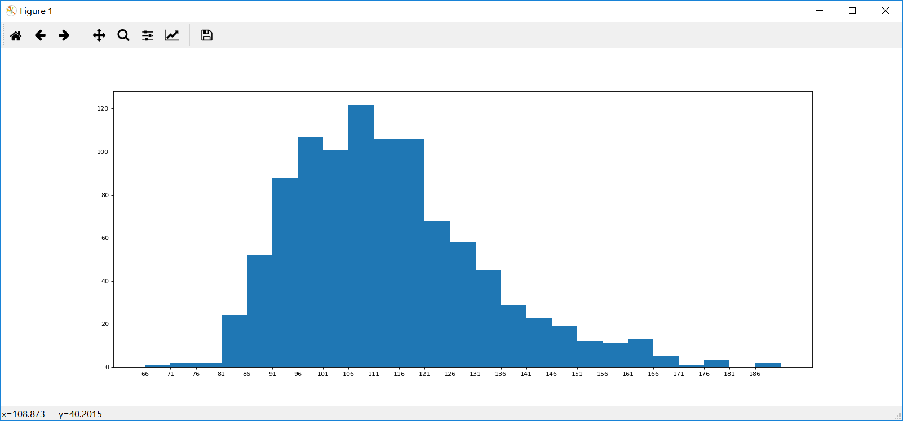 对于这一组电影数据，如果我们希望统计电影分类(genre)的情况，应该如何处理数据？
思路：重新构造一个全为0的数组，列名为分类，如果某一条数据中分类出现过，就让0变为1.
# coding=utf-8
import pandas as pd
from matplotlib import pyplot as plt
import numpy as np
file_path = "./IMDB-Movie-Data.csv"
# 读取CSV文件
df = pd.read_csv(file_path)
print(df["Genre"].head(3))
# 统计分类的列表
temp_list = df["Genre"].str.split(",").tolist() #[[],[],[]]
genre_list = list(set([i for j in temp_list for i in j]))
# 等价于 genre_list = []
# for i in temp_genre_list:
# genre_list.extend(i)
# genre_list = list(set(genre_list))
# 构造全为0的数组
zeros_df = pd.DataFrame(np.zeros((df.shape[0],len(genre_list))),columns=genre_list)
# 给每个电影出现分类的位置赋值1
for i in range(df.shape[0]):
#zeros_df.loc[0,["Sci-fi","Mucical"]] = 1
zeros_df.loc[i,temp_list[i]] = 1
# 统计每个分类的电影的数量和
genre_count = zeros_df.sum(axis=0)
# 排序
genre_count = genre_count.sort_values()
_x = genre_count.index
_y = genre_count.values
#画图
plt.figure(figsize=(20,8),dpi=80)
plt.bar(range(len(_x)),_y,width=0.4,color="orange")
plt.xticks(range(len(_x)),_x)
plt.show()
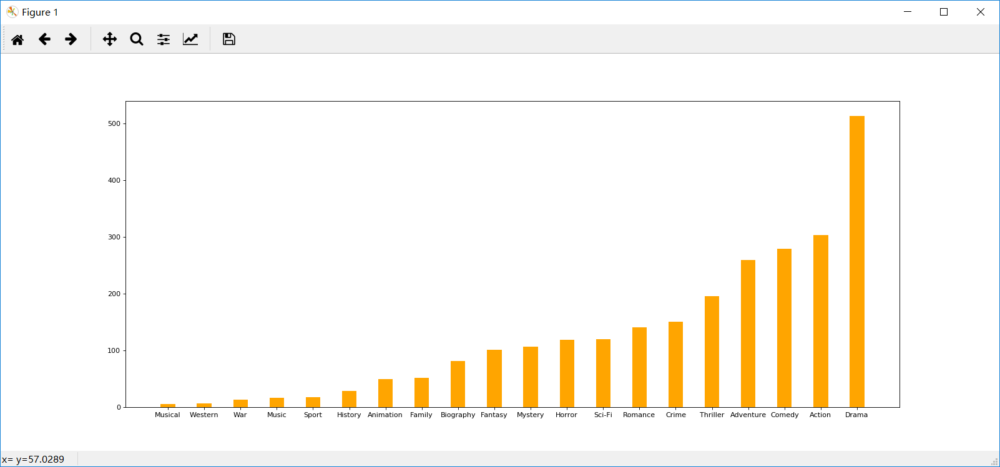
数据合并之join
join:默认情况下他是把行索引相同的数据合并到一起. 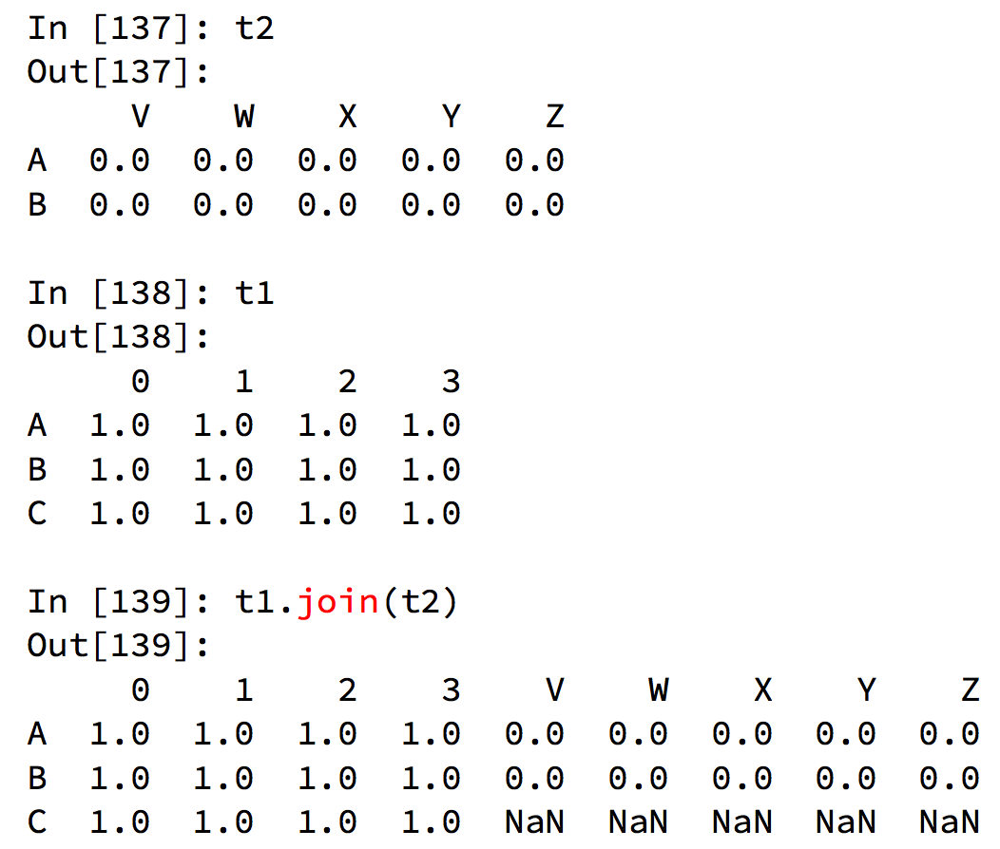
数据合并之merge
merge:按照指定的列把数据按照一定的方式合并到一起
merge(left, right, how='inner', on=None, left_on=None, right_on=None, left_index=False, right_index=False, sort=False, suffixes=('_x', '_y'), copy=True, indicator=False, validate=None)
import pandas as pd
df1=pd.DataFrame({'key':['a','b','a','b','b'],'value1':range(5)})
df2=pd.DataFrame({'key':['a','c','c','c','c'],'value2':range(5)})
display(df1,df2,pd.merge(df1,df2))
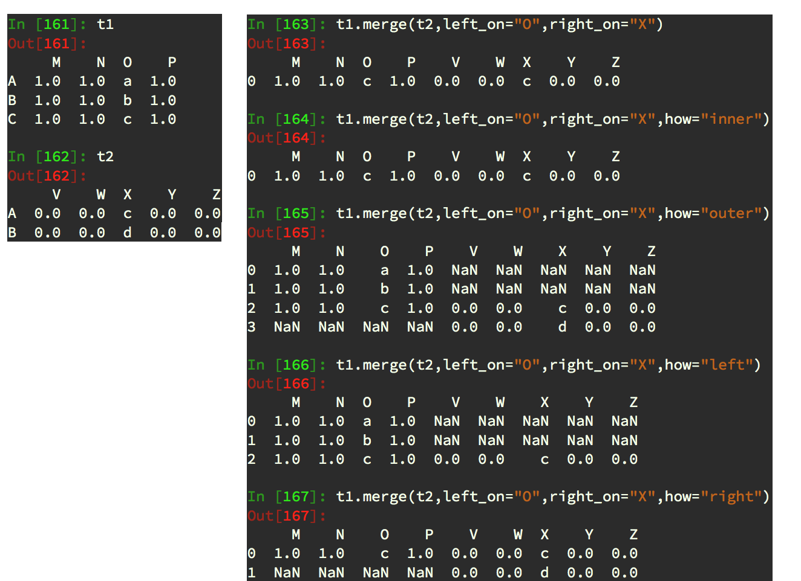
- 默认的合并方式inner，交集;
- merge outer，并集，NaN补全;
- merge left，左边为准，NaN补全;
- merge right，右边为准，NaN补全.
分组和聚合
在pandas中类似的分组的操作有很简单的方式来完成
grouped = df.groupby(by="columns_name")
grouped是一个DataFrameGroupBy对象，是可迭代的;grouped中的每一个元素是一个元组，元组里面是（索引(分组的值)，分组之后的DataFrame）.
那么，分组之后的每个DataFrame的长度？ 长度是一个思路，但更多的方法(聚合方法)来解决这个问题. DataFrameGroupBy对象有很多经过优化的方法. 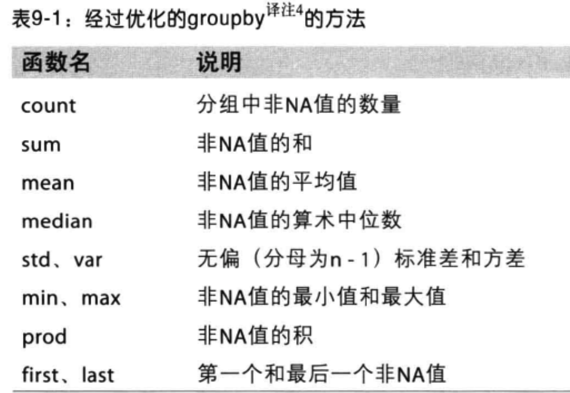 如果需要对国家和省份进行分组统计
grouped = df.groupby(by=[df["Country"],df["State/Province"]])
很多时候我们只希望对获取分组之后的某一部分数据，或者说我们只希望对某几列数据进行分组，这个时候我们应该怎么办呢？ 获取分组之后的某一部分数据：
df.groupby(by=["Country","State/Province"])["Country"].count()
对某几列数据进行分组：
df["Country"].groupby(by=[df["Country"],df["State/Province"]]).count()
观察结果，由于只选择了一列数据，所以结果是一个Series类型.
如果我想返回一个DataFrame类型呢？
t1 = df[["Country"]].groupby(by=[df["Country"],df["State/Province"]]).count()
t2 = df.groupby(by=["Country","State/Province"])[["Country"]].count()
以上的两条命令结果一样，和之前的结果的区别在于当前返回的是一个DataFrame类型.
索引和复合索引
简单的索引操作：
- 获取index：
df.index - 指定index ：
df.index = ['x','y'] - 重新设置index :
df.reindex(list("abcedf")) - 指定某一列作为index ：
df.set_index("Country",drop=False) - 返回index的唯一值：
df.set_index("Country").index.unique()
假设a为一个DataFrame,那么当a.set_index(["c","d"])即设置两个索引的时候是什么样子的结果呢？
a = pd.DataFrame({'a': range(7),'b': range(7, 0, -1),'c': ['one','one','one','two','two','two', 'two'],'d': list("hjklmno")})
Series复合索引
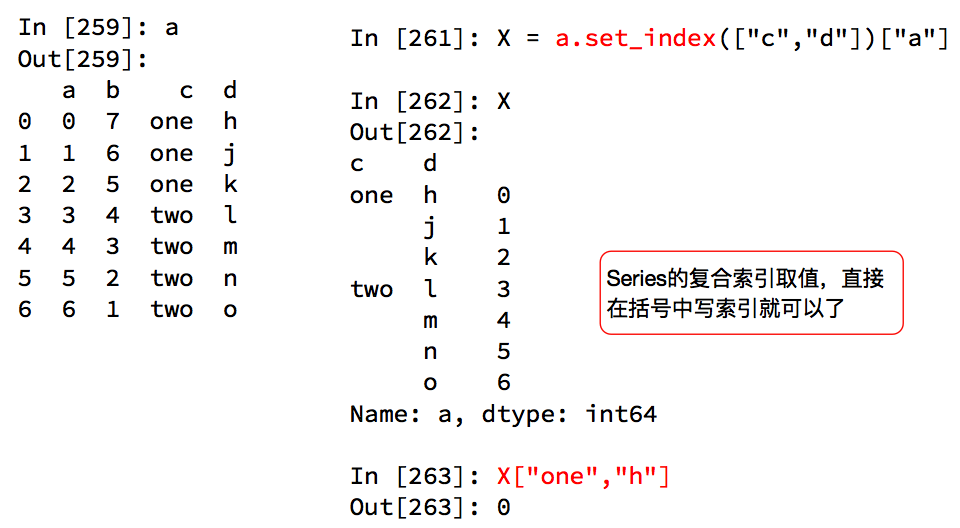 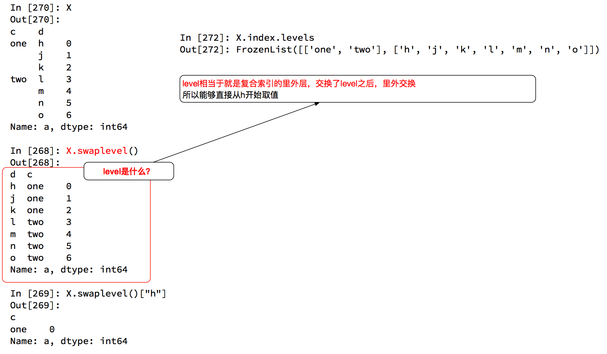
DataFrame复合索引
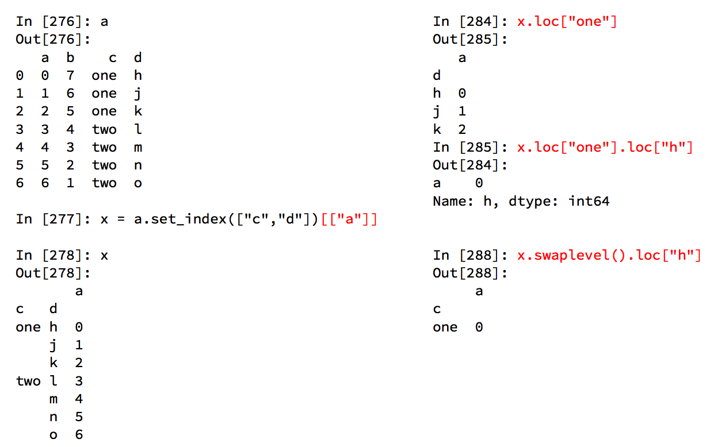
例.现在有2015到2017年25万条911的紧急电话的数据，请统计出出这些数据中不同类型的紧急情况的次数.
import pandas as pd
import numpy as np
from matplotlib import pyplot as plt
df = pd.read_csv("./911.csv")
# print(df.info())
temp_list = df["title"].str.split(":").tolist()
cate_list = [i[0] for i in temp_list]
cate_set_list = list(set(cate_list))
df["type"] = pd.DataFrame(np.array(cate_list).reshape((df.shape[0],1)))
# print(df.head())
cate_zeros = pd.DataFrame(np.zeros((df.shape[0],len(cate_set_list))),columns=cate_set_list)
for cate in cate_set_list:
cate_zeros[cate][df["type"].str.contains(cate)] = 1
zeros_sum = cate_zeros.sum(axis=0)
sum_values = zeros_sum.values
plt.figure(figsize=(8, 6),dpi=80)
plt.bar(cate_set_list,sum_values,color="orange",width=0.4)
plt.show()
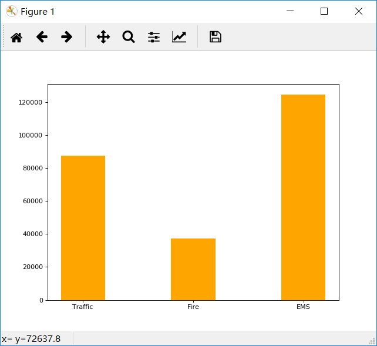 统计出不同月份不同类型紧急电话的次数的变化情况，应该怎么做可以按照上面的方法将时间戳按照右边“-”进行切割，然后将前面的字符串定义为原数组的最后一列，在进行其他操作. 也可以使用pandas的时间序列.
pandas中的时间序列
不管在什么行业，时间序列都是一种非常重要的数据形式，很多统计数据以及数据的规律也都和时间序列有着非常重要的联系,而且在pandas中处理时间序列是非常简单的生成一段时间范围.
pd.date_range(start=None, end=None, periods=None, freq='D')
start和end以及freq配合能够生成start和end范围内以频率freq的一组时间索引. start和periods以及freq配合能够生成从start开始的频率为freq的periods个时间索引. 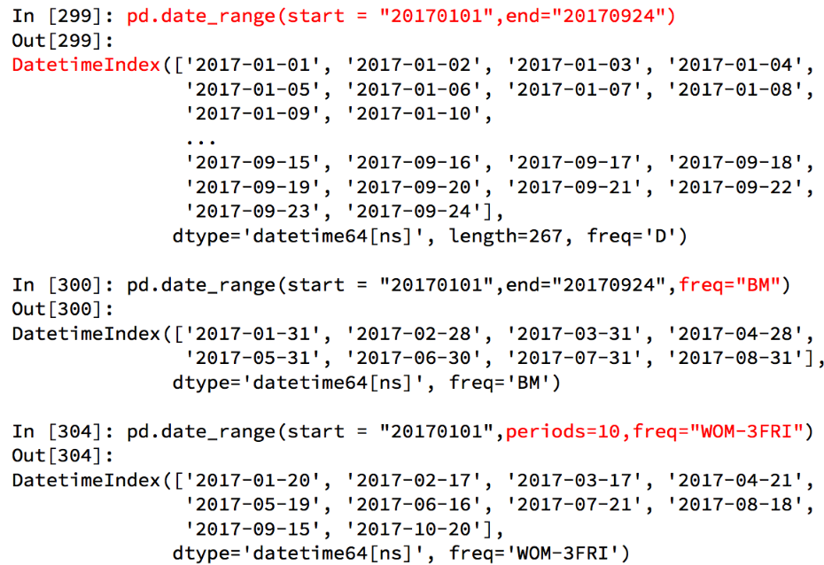 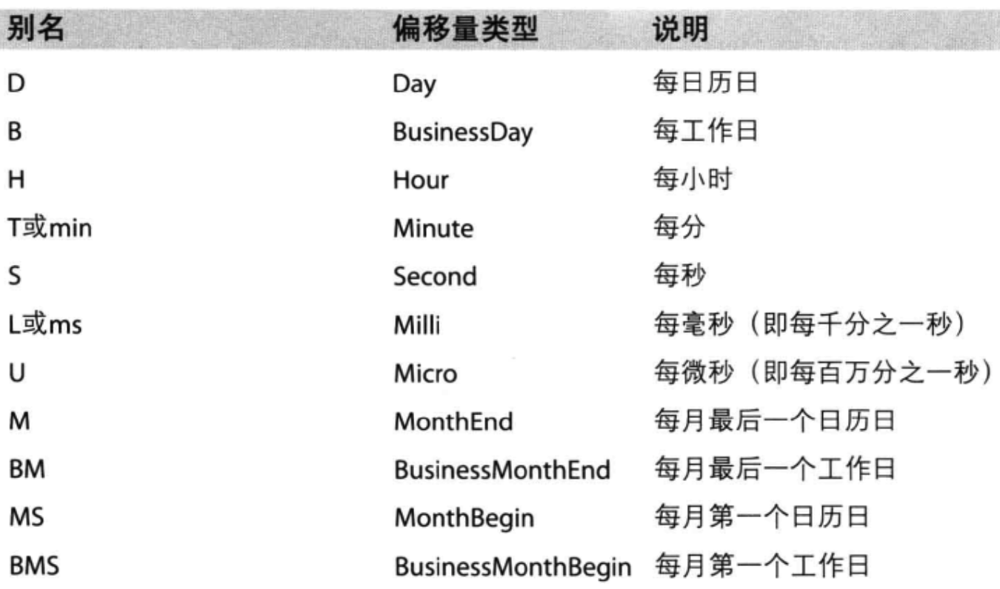
在DataFrame中使用时间序列
index=pd.date_range("20170101",periods=10)
df = pd.DataFrame(np.random.rand(10),index=index)
回到最开始的911数据的案例中，我们可以使用pandas提供的方法把时间字符串转化为时间序列.
df["timeStamp"] = pd.to_datetime(df["timeStamp"],format="")
format参数大部分情况下可以不用写，但是对于pandas无法格式化的时间字符串，我们可以使用该参数，比如包含中文.
pandas重采样
重采样：指的是将时间序列从一个频率转化为另一个频率进行处理的过程，将高频率数据转化为低频率数据为降采样，低频率转化为高频率为升采样.pandas提供了一个resample的方法来帮助我们实现频率转化. 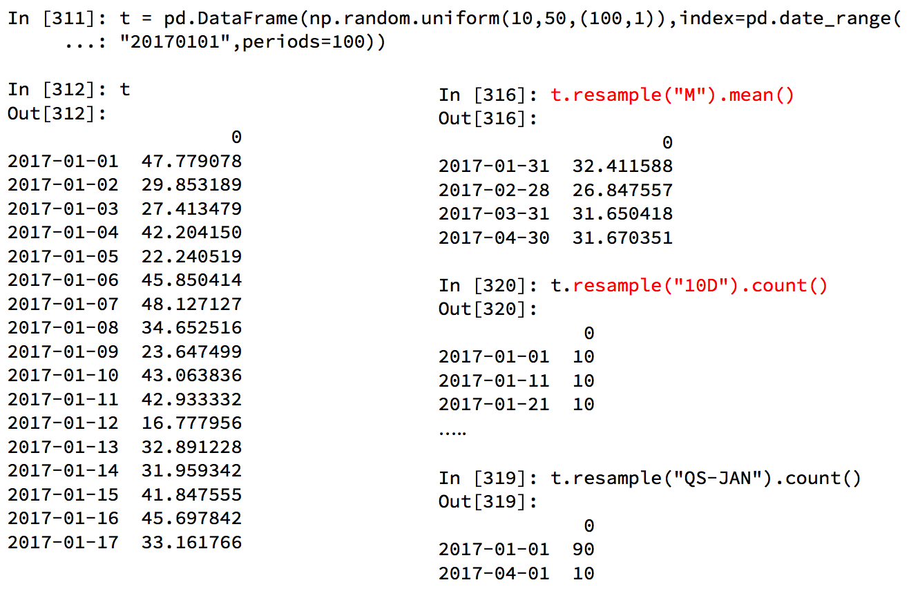
PeriodIndex
之前所学习的DatetimeIndex可以理解为时间戳，那么现在我们要学习的PeriodIndex可以理解为时间段．
periods = pd.PeriodIndex(year=data["year"],month=data["month"],day=data["day"],hour=data["hour"],freq="H")
那么如果给这个时间段降采样呢？
data = df.set_index(periods).resample("10D").mean()
Xin态好先生
机会是给有准备的人的.